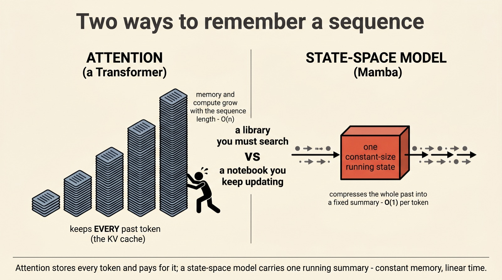
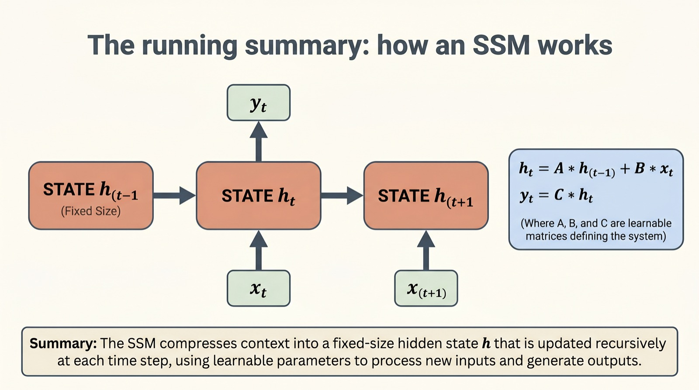
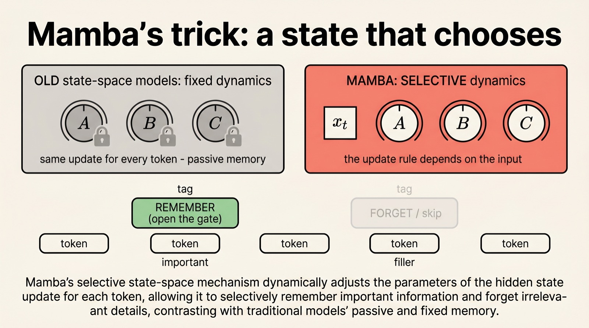
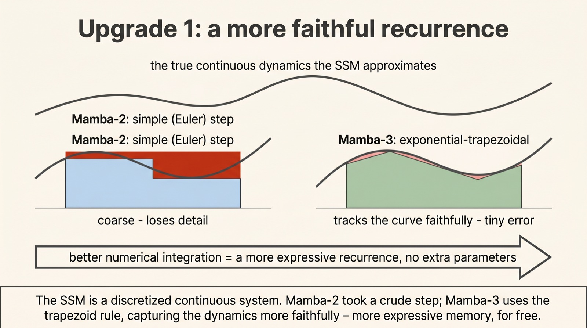
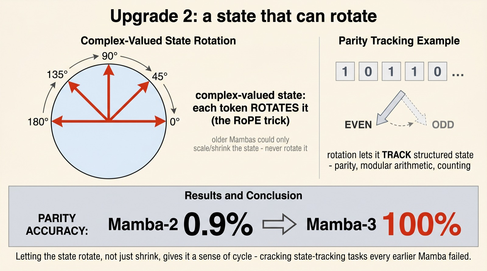
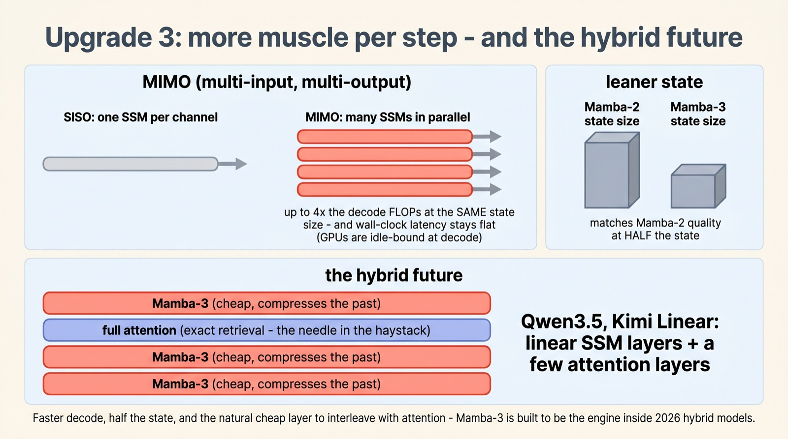

Mamba-3 and the return of the state-space model
A memory that
doesn't grow
A transformer remembers a sequence by keeping every token it has ever seen — a memory that grows without end. Mamba does the opposite: it carries one small, constant-size running summary. Mamba-3, fresh out of Princeton, makes that little memory expressive enough to rival attention — and teaches it a trick it never had: how to rotate.
State-space models promise linear-time, constant-memory sequence modeling, but they've always trailed transformers on the things attention does effortlessly. Mamba-3 (ICLR 2026) closes much of that gap with three surgical upgrades — a more faithful recurrence, a complex-valued state that can track structure, and a hardware-friendly MIMO design — and stakes its claim as the cheap layer inside 2026's hybrid models.
Scroll to begin.
↓
Two ways to remember a sequence
Every language model faces the same basic problem: as it reads a sequence, how does it carry the past forward? There are two fundamentally different answers, and the whole story of Mamba lives in the gap between them.
The transformer's answer is to remember everything. Each new token can look back at every token before it, because the model keeps them all in a store called the KV cache. It's wonderfully exact — nothing is ever blurred or lost — but it's expensive in a way that compounds: the cache grows with every token, and the work of looking back grows with it. Double the sequence and you more than double the cost.
The state-space model's answer is to keep a running summary. Instead of hoarding every token, it maintains one fixed-size memory — a state — and updates it as each token arrives. The past is compressed into that small state and the raw tokens are thrown away. Whatever the sequence length, the memory stays the same size and each step costs the same.

That's the trade in a sentence: a library you must search through, or a notebook you keep updating. The notebook is gloriously cheap — constant memory, linear time — but everything rides on how cleverly it's written. For years, the notebook simply wasn't smart enough. Mamba-3 is the latest, and best, attempt to fix that.
The running summary
So what does this "running summary" actually look like? Under the hood, a state-space model is just a small, disciplined recurrence — three rules applied to every token in turn. It's worth seeing them, because everything Mamba-3 improves is a tweak to these lines.
At each step, the model holds a hidden state h. A new token x comes in, and the state is updated; then an output y is read off the state. In symbols:
Read it like a recipe. A decides how much of the old state to keep (and how much to fade away); B decides how much of the new token to write in; C decides what to read out. The state box never changes size — it's the same small memory at token one and token one million.

If this sounds like an RNN from a decade ago, it nearly is — with one critical difference that makes it trainable at scale. Because the update is linear, the whole sequence of state updates can be computed in parallel rather than one painstaking step at a time. That's the structural trick that let SSMs ride modern hardware. But raw efficiency was never the problem. The problem was that this particular memory wasn't smart enough — and that's what Mamba set out to fix.
A state that chooses
The classical state-space models had a hidden weakness: their update rules were fixed. The same A, B, and C applied to every token, no matter what it was. The memory was passive — it compressed the past the same way whether the next token was a crucial name or a throwaway comma.
Mamba's breakthrough, back in its first version, was selectivity: make the update rules depend on the current token. Now A, B, and C are computed from the input itself. The model can look at what's arriving and decide, on the spot, how much to remember and how much to forget — slam the gate shut on filler, throw it open for something important.

That one change is what turned a tidy mathematical idea into a model that could actually compete with transformers on real language. It's the foundation everything else stands on. Mamba-3 keeps selectivity intact and then asks a sharper question: granted the model can choose what to remember, can we make the underlying memory itself richer and more faithful? It answers in three parts.
Upgrade one: a more faithful recurrence
The first upgrade sounds technical but rests on a homely idea. That recurrence in section two didn't fall from the sky — it's a discretization: a way of chopping a smooth, continuous process into discrete token-sized steps. And how you chop matters.
Earlier Mambas used the crudest possible chop — essentially a single flat step approximating each slice of the underlying curve (numerically, an Euler step). It works, but it's coarse, and it quietly throws away detail. Mamba-3 swaps it for the trapezoidal rule — fitting a slanted trapezoid to each slice instead of a flat rectangle. It hugs the true curve far more closely.

The payoff is expressivity for free. A more accurate integration gives a richer, more general recurrence — the memory can represent more complex dynamics — without adding a single parameter. It's the rare upgrade that costs nothing and simply makes the math less lossy. But the most striking upgrade isn't about accuracy at all. It's about giving the state a brand-new move.
Upgrade two: a state that can rotate
Here is the upgrade that turns heads. Every Mamba before this one had a curious blind spot: it could not reliably solve parity — the toddler-simple task of deciding whether a stream of bits contains an even or odd number of ones. Mamba-2 scored 0.9% on it. Essentially zero.
Why so hopeless? Because the old state could only shrink and mix — scale its contents up or down. To count parity you need to flip between two states, on and off, over and over. Mamba-3's fix is to let the hidden state be a complex number and apply rotations to it as each token arrives — implemented with the same RoPE rotations transformers use for position. A state that can rotate can cycle, and a state that can cycle can count.

The result is stark. On parity, Mamba-3 jumps from under 1% to a perfect 100%; on modular-arithmetic tasks it reaches the high 90s and 80s where earlier models flatlined. These are exactly the "track the structured state of the world" problems that a pure compressed memory was thought to be incapable of. Giving the notebook the ability to rotate, not just fade, unlocked them.
Upgrade three: more muscle per step
The third upgrade is about hardware, and it reflects a quiet shift in priorities across the whole field: from training fast to inferring fast. When you generate text one token at a time, GPUs are mostly bored — waiting on memory, with compute cores sitting idle. Mamba-3 puts those idle cores to work.
The trick is called MIMO — multi-input, multi-output. Instead of one little state-space per channel, Mamba-3 runs many in parallel, packing up to four times the arithmetic into each step. Crucially, because that compute was free — the cores were idle anyway — wall-clock latency barely moves. You get markedly more capacity per token at essentially the same speed.
Add it up and the efficiency story is remarkable: Mamba-3 matches Mamba-2's quality at half the state size, posts the fastest prefill-and-decode latency across sequence lengths, and still gains on downstream accuracy. But the real destination isn't a pure-Mamba model at all — it's a hybrid.

Why this matters
It would be a mistake to read Mamba-3 as "the model that finally beats the transformer." The honest verdict from its own authors is more interesting: linear state-space layers and attention layers are better together than apart. Each is good at exactly what the other is bad at.
A state-space layer is a brilliant compressor — it carries the gist of a long context cheaply, in constant memory. But ask it to fetch one exact token from far back — the proverbial needle in the haystack — and its blurry summary struggles. Attention is the reverse: a precise but expensive database that can retrieve any token verbatim. So the architectures of 2026 — Qwen3.5, Kimi Linear and their kin — stack mostly cheap Mamba-style layers with just a few attention layers sprinkled in. Compression for the bulk, exact recall where it counts.
That's the shift worth carrying away. For years the question was "attention or recurrence?", framed as a winner-take-all. Mamba-3's quiet argument is that it was always the wrong question. The interesting future isn't one memory or the other — it's a notebook and a library, working side by side, each doing the job it's built for.